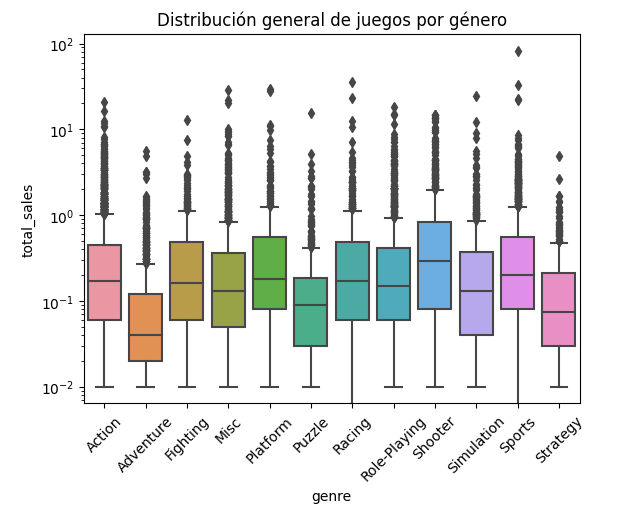
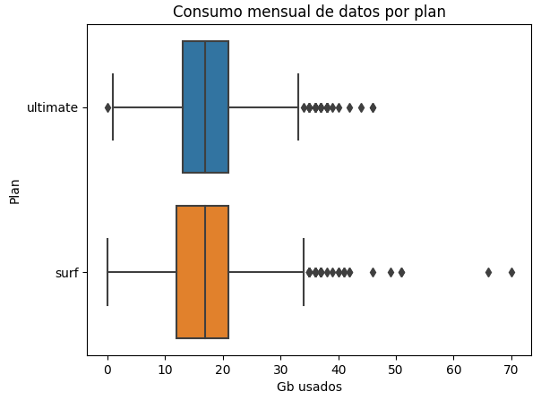
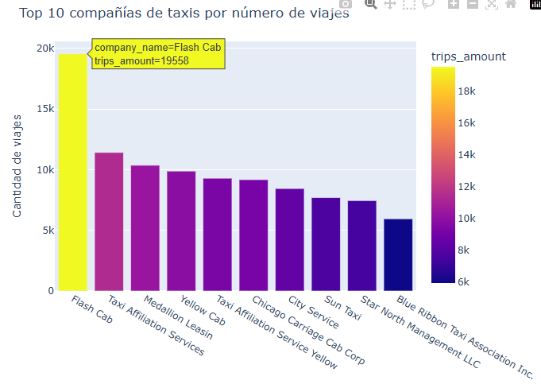

Estadística | Data Scientist Jr | Python • SQL • Análisis de Datos
Portafolio de proyectos enfocados en análisis de datos reales y generación de insights
Data Scientist con base en estadística y experiencia en análisis de datos operativos y financieros. Especializada en limpieza, análisis exploratorio y validación de datos utilizando Python y SQL, con enfoque en calidad de información y generación de insights accionables. Interesada en resolver problemas reales y aportar valor en equipos data-driven.

Problema: Identificar qué variables (plataforma, género, región y calificaciones) influyen en el desempeño comercial de los videojuegos, para entender qué factores aumentan la probabilidad de éxito en el mercado. Qué hice: Realicé un análisis exploratorio de datos (EDA) utilizando Python (Pandas) para limpiar, transformar y analizar información de ventas de videojuegos a nivel global. Evalué patrones por plataforma, género y región, y apliqué pruebas de hipótesis para validar diferencias significativas en calificaciones y su relación con el rendimiento comercial. Resultado o aprendizaje: Identifiqué ciclos de vida de plataformas (8–10 años) y diferencias claras en preferencias regionales. Encontré que las calificaciones profesionales tienen mayor influencia en el desempeño comercial que las de usuarios. Estos hallazgos permiten orientar estrategias de lanzamiento, selección de plataformas y segmentación de mercado. Stack: Python (Pandas), Análisis Exploratorio de Datos (EDA), Limpieza de datos, Análisis estadístico, Pruebas de hipótesis, Visualización de datos

Problema: Determinar qué plan de telecomunicaciones genera mayores ingresos y entender los factores que influyen en la rentabilidad. Qué hice: Analicé datos de consumo (llamadas, mensajes y datos móviles) y facturación de usuarios mediante Python (Pandas). Realicé análisis exploratorio de datos y apliqué pruebas de hipótesis para evaluar diferencias en ingresos entre planes. Resultado o aprendizaje: Identifiqué diferencias significativas en ingresos entre planes y encontré que los cargos por excedentes influyen directamente en la rentabilidad. Esto permite optimizar estrategias de precios y segmentación de clientes. Stack: Python (Pandas), EDA, Análisis estadístico, Pruebas de hipótesis

Problema: Entender cómo factores externos, como la ubicación y el clima, influyen en la duración de los viajes para identificar oportunidades de optimización en servicios de transporte. Qué hice: Realicé un análisis exploratorio de datos utilizando Python (Pandas) para evaluar la distribución de viajes por zonas y compañías. Analicé el impacto de condiciones climáticas en la duración de los viajes y apliqué pruebas estadísticas (Levene y t-test) para validar diferencias significativas. Resultado o aprendizaje: Identifiqué una concentración de viajes en zonas de alta actividad económica y comprobé que las condiciones de lluvia afectan significativamente la duración de los viajes. Estos hallazgos permiten anticipar variaciones en la demanda y optimizar la asignación de recursos. Stack: Python (Pandas), EDA, Análisis estadístico, Pruebas de hipótesis, Visualización de datos